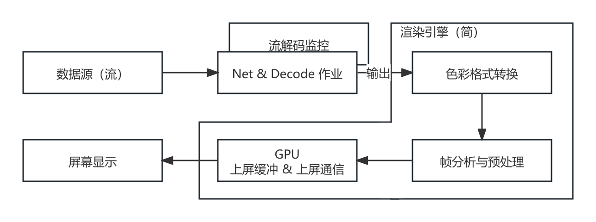
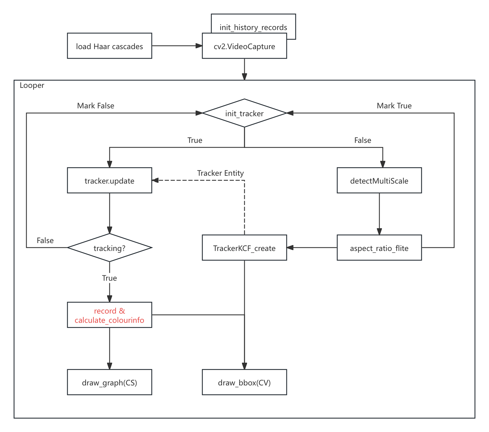
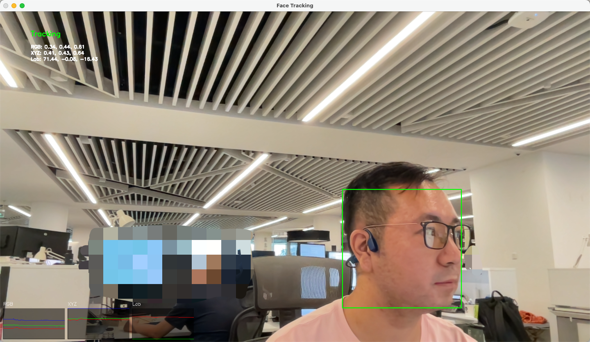

5.1.3 视频分析库（PyOpenCV、Color-Science）
和音频一样，外部工程里，对视频的分析处理焦点多在于 帧分析，并非于流分析。或者说，有关音视频编解码与网络流的评估，是属于完整编解码工程内部范畴。其更多的是与网络子系统进行结合，并依托于诸如 ITU-T（或其他音视频组织，较少）提出的相关协议（如 H.264、H.265 等）约束之标准规格背景，来作为整体工程中的 子评估系统。所以，音视频流分析（Audio/Video Stream Analysis）和编解码协议是强耦合的，一般会将之归属于 编解码器内部监测 部分，平行于项目的正常作业流水线，来监控各个环节。
而 视频帧分析（Video Frame Analysis） 或 帧处理（Frame Processing） 的有效介入点，是在 编码前（Before encoding） 和 解码后（After decoding）。此时，我们用来处理的数据，已经是纯粹的 色彩格式（Color Format） 数据了。
以解码为例，在解码后的必要环节是什么样的呢？

图 5-6 解码后必要环节流程示意图
首先，是 颜色空间转换，亦是大量使用第二章知识的地方。一般解码后的图像因为考虑到存储空间成本，会采用 传输格式（Transport Format），即 YUV 体系色彩格式。
不过，只凭借 YUV 是无法做为 唯一且足够泛化的 随后步骤起点的。这并不是指 YUV体系的色彩格式 无法直接交由如 OpenGL、DirectX、Vulkan 等驱动处理，相反这些驱动内部往往已经通过 模式编程方法，完成了一些 固定格式自硬件抽象层（HAL）的映射式转换工作（原理同第二章中，已讲解并推导过的色彩空间转换，部分算子的硬件化实现在驱动层面的组合）。同理于 RGB，在硬件支持的情况下，直接以 YUV 上屏在流程上会更简短。可当我们的目的是需要对每一帧的图片，做 基于传统图形学算法上的调整，或 为模型进行特征分析/提取的预处理 时，未经存储空间压缩并贴近人自然感受的 原色格式（Primaries Format），即 RGB 体系色彩格式，还是会更便于操作。
另外，并不一定是由 YUV 转 RGB，在某些场景，我们也会要求将 RGB 转 YUV，或完成两个体系内的其他细分类型互转。所以，具体如何转换是 由后续步骤所需的输入而定，相当灵活。
在色彩格式转换后，则是 帧分析与预处理步骤。这一步完成 对前者输出帧数据的特征提取与解析。将会使用到相关的分析方法，例如 二维傅立叶 或其他 基础图像算法、滤波核 或 模型接入。此处也是我们本节进行操作的重点。
最后一步是 GPU 上屏缓冲和通信，则需要由 选定的图形驱动（Vulkan 等）来建立相应的信道，提供指令通信和显存更新功能。本节中，这些相关的环境和上屏更新，是由 Python 的 Tkinter 界面库走系统 UI 环境 或 常用视频分析库（如 OpenCV）在 库内自行维护。暂不需要我们介入。
而当需要项目自行处理驱动和 GPU 通信环境上下文维护时，整个渲染引擎的部分，都应当在 同一个主体环境下（也可以用代表其通信句柄名的，实时上下文/通信上下文，来代指），辅助其他（如果需要）用于 时间片复用 或 GPU 信令预封装 的 辅助环境（如 延迟上下文 或 类似的自定义指令组装结构）使用。从而方便各个 前后关联密切环节的处理结果，在 GPU 资源池中实现互通。
这一涉及驱动资源协同和池化设计的部分，就属于 图形引擎（Graphics Engine） 的关键处理技术之一了。让我们在未来的进阶一册中再单独讲解。
常用的视频分析库主要有两个，为 Colour-Science、PyOpenCV，分别对应 [ 颜色科学综合分析、图像处理与科学计算 ] 的需求。常被用于 工程原型验证（即设计思路的验证） 和 外部（指工程外）帧分析。
尤其是 PyOpenCV，该库是重中之重。不仅是视频分析的核心库，在业务中也会经常直接使用到它的 C++ 内核。
Colour-Science（Color-Science）
Colour-Science（Color-Science） 是一个专注于 色彩科学计算、光谱分析、色彩转换 和 色彩管理 的 Python 计算库。其由 Colour Developers 开发和维护，旨在为色彩科学领域的研究和应用提供一个 全面而强大的工具集 [8] 。注意区分库名为 Colour-Science 。
主要功能：
- 色彩空间转换，支持 CIE 标准下的 RGB、XYZ、LAB、LUV 等各种 色彩空间 转换与互转
- 支持色彩科学如 黑体辐射、辐射亮度、色温 等的 物理量评估
- 提供感官量与科学量间的换算，支持 配色函数 和 CIE 统一化色彩差异对比计算
- 支持由设备制造商提供的 LUT、CSV、XRite 等 不同种色彩配置文件 校准、评估、转换
- 能够提供完备的色彩学分析图表可视化能力
Colour-Science 是一个 相当齐全的色彩科学库，其方法基本涵盖了现行大部分通用（或较广范围使用）的色彩规格，并实现了相互间的联结。通过它，我们能够轻易的将不同色彩系统内的自定义变量等内部概念，转换到统一 CIE 规格下衡量。当然，也可以反向提供相应的配置内容。
由于库的体量过于巨大，此处仅列出部分相对高频次使用的函数，仅供参考。
核心模块（colour.）的常用函数（简，仅列出名称）：
- 色彩空间： RGB_COLOURSPACES, RGB_to_XYZ, XYZ_to_RGB, XYZ_to_Lab, Lab_to_XYZ, xyY_to_XYZ, XYZ_to_xyY, LMS_to_XYZ, XYZ_to_LMS, UCS_to_XYZ, XYZ_to_UCS
- 色彩比对： XYZ_to_xy, xy_to_XYZ, XYZ_to_uv, uv_to_XYZ
- 色温转换： xy_to_CCT, CCT_to_xy
- 色彩感知： chromatic_adaptation, contrast_sensitivity_function, corresponding_chromaticities_prediction
- 色差计算： delta_E (CIE 1976, CIE 1994, CIE 2000, CMC etc.), index_stress (Kruskal’s Standardized Residual Sum of Squares)
- 光度计算： lightness, whiteness, yellowness, luminance, luminous_flux, luminous_efficacy, luminous_efficiency,
- 光谱处理： <SpectralDistribution> 光谱分析的主体类, sd_to_XYZ, sd_blackbody, sd_ones, sd_zeros, sd_gaussian, sd_CIE_standard_illuminant_A sd_CIE_illuminant_D_series
- 颜色代数： table_interpolation, kernel_nearest_neighbour, kernel_linear, kernel_sinc, kernel_lanczos, kernel_cardinal_spline,
- 数据读写： read_image, write_image, read_LUT, write_LUT, read_sds_from_csv_file, write_sds_to_csv_file, read_spectral_data_from_csv_file, read_sds_from_xrite_file,
辅助模块（colour.<扩展前缀>.）的常用函数（简，仅列出名称）：
- 绘图可视化（plotting.）： plot_single_colour_swatch, plot_multi_colour_swatches, plot_single_sd, plot_multi_sds, plot_single_illuminant_sd, plot_multi_illuminant_sds, plot_single_lightness_function, plot_multi_lightness_functions, plot_single_luminance_function, plot_multi_luminance_functions
- 读写扩展（io.）： image_specification_OpenImageIO LUT_to_LUT,
- 色彩模型（models.）： RGB_COLOURSPACE_CIE_RGB, RGB_COLOURSPACE_BT709, RGB_COLOURSPACE_BT2020, RGB_COLOURSPACE_DCI_P3, RGB_COLOURSPACE_sRGB
- 色温扩展（temperature.）： mired_to_CCT, CCT_to_mired, xy_to_CCT_CIE_D, CCT_to_xy_CIE_D
- 光谱恢复（recovery.）： sd_Jakob2019, LUT3D_Jakob2019, XYZ_to_sd_Jakob2019, find_coefficients_Jakob2019
- 代数扩展（algebra.）： euclidean_distance, manhattan_distance, eigen_decomposition, vecmul
Colour 开源项目 位于：Github:colour-science/colour 。使用细节，可自行前往官方档案馆查阅：官方档案馆查阅 。
PyOpenCV（Python Entry of Open Source Computer Vision Library）
PyOpenCV（Python OpenCV） 是 计算机视觉和图像机器学习 OpenCV 库 的 官方 Python 套接接口，项目自 Intel 奠基，现由 OpenCV 开源开发社区进行维护 [9] 。其核心 OpenCV 覆盖了数百个计算机视觉算法，并 官方预训练好了 大量用于 传统 CV 的 ML 功能线下模型（详见 Github:OpenCV-contrib/Modules ），囊括从 简单图像处理 到 复杂应用的视觉任务，如边缘检测、图像滤波、基础变换（旋转、缩放、错切、仿射变换）、对象检测等，都可通过调用其方法功能实现。并且，考虑到机器学习拓展性，本身提供了 对模型训练和推理的相关扩展接口，方便处理中使用。
此外，OpenCV 有着对图片、视频文件、视频流（本地流、网络流）等数据源的完整支持，使得基本大部分涉及视频的分析工作，都能够用该库一库解决。非常强大。但其是一个以计算机视觉和 2D 图像处理为核心的库，具有 有限 的 3D 功能，并不专注于全面的 3D 图形学处理。
另外需要注意的是 OpenCV 并不是 专门用于进行深度学习的框架，虽然能够进行推理，可 并不能 达到最好的资源利用效率和训练与推理性能。这点在应用或非分析工程中，当存在大量模型处理需求或模型流水线时，应该考虑。
主要功能：
- 图像处理，支持图像读取、写入、滤波、变换、边缘检测等基本操作
- 视频处理，支持视频文件的读取、写入、帧捕获和视频流处理
- 特征检测，提供关键点检测和特征匹配，如 SIFT、SURF、ORB 等
- 对象检测，支持 Haar 级联分类器、深度学习模型（如 YOLO、SSD）等
- 机器学习，支持多种机器学习算法，如 SVM、KNN、决策树等
- 三维重建，提供立体匹配、相机标定、三维重建功能（有限）
- 图像分割，支持阈值分割、轮廓检测、分水岭算法等
- 相机补偿，支持镜头畸变校正和图像增强
- 运动分析，提供光流计算和运动跟踪功能
- 图像拼接，支持全景图像拼接和图像对齐
- GPU 加速，部分算法支持 GPU 加速，提升计算性能
- 高级图像处理，支持图像金字塔、模板匹配、霍夫变换（Hough）等高级操作
- 丰富的库和模块，集成了大量的图像处理和分析工具
- 良好的库兼容性，可以与 NumPy、SciPy 等科学计算库结合使用
- 多模型格式支持，支持 Caffe、TensorFlow、ONNX（关键） 等多种框架的模型格式
- 跨平台支持，可以在主流操作系统（Windows、macOS、Linux）上运行
由于 OpenCV 对 API 入口进行了统一，以下模块调用前缀皆为 “cv2.”，比如 “cv2.add”，后续如无特殊说明，则按此依据。
因为 OpenCV 的复杂度，我们参考官方的 核心库（对应 opencv-python） 和 扩展库（opencv-contrib-python） 两大分类，将主要的常用函数和封装，也拆分为 两部分描述。
首先，是核心库（opencv-python）所包含的内部模块。
核心模块（cv2.core）的常用函数（简，仅列出名称）：
- 基本数据结构： <Mat>、 <Point>、 <Size>、 <Rect>、 <Scalar>
- 基本算法和操作： add, subtract, multiply, divide, absdiff
- 线性代数： solve, invert, determinant, eigen
- 随机数生成： <RNG>, randu, randn
- 类型转换： convertScaleAbs, normalize
- 数据操作： minMaxLoc, meanStdDev, reduce
- 输入输出： imread, imwrite, imdecode, imencode
- 时间操作： getTickCount, getTickFrequency, getCPUTickCount
- 图像克隆和复制： copyMakeBorder
- 数学函数： exp, log, sqrt, pow
图像处理模块（cv2.imgproc）的基础函数（简，仅列出名称）：
- 基本图像变换： resize, warpAffine, warpPerspective
- 颜色空间转换： cvtColor, inRange
- 图像滤波： GaussianBlur, medianBlur, bilateralFilter, blur
- 阈值处理： threshold, adaptiveThreshold
- 直方图处理： calcHist, equalizeHist
- 几何变换： getRotationMatrix2D, getAffineTransform, getPerspectiveTransform
- 图像金字塔： pyrUp, pyrDown
- 图像插值： linearPolar, remap
- 直线与形状绘制： line, rectangle, circle, ellipse, putText
图像处理模块（cv2.imgproc）的结构分析与形态学（Morphology）函数（简，仅列出名称）：
- 边缘检测： Canny, Sobel, Laplacian, Scharr
- 霍夫变换： HoughLines, HoughLinesP, HoughCircles
- 轮廓检测： findContours, drawContours
- 形态学操作： morphologyEx, erode, dilate
- 矩形拟合： boundingRect, minAreaRect
- 圆形拟合： minEnclosingCircle
- 椭圆拟合： fitEllipse
- 多边形拟合： approxPolyDP
- 凸闭包计算： convexHull, convexityDefects
- 形状匹配： matchShapes
视频读写模块（cv2.videoio）的常用函数（简，仅列出名称）：
- 视频捕获： <VideoCapture>, isOpened, read, release
- 视频写入： <VideoWriter>, write, release
- 视频属性： get, set （归属 <VideoCapture> 创建的流句柄所有）
- 视频编码： <VideoWriter_fourcc>
图形用户界面模块（cv2.highgui）的常用函数（简，仅列出名称）：
- 创建窗口： namedWindow
- 显示图像： imshow
- 等待键盘事件： waitKey
- 销毁窗口： destroyWindow, destroyAllWindows
- 鼠标事件： setMouseCallback
- 滑动条（Trackbar）： createTrackbar, getTrackbarPos, setTrackbarPos
传统机器学习对象检测模块（cv2.objdetect）的常用函数（简，仅列出名称）：
- 分类器实例： <CascadeClassifier>
- 使用分类器检测对象： detectMultiScale
- 保存和加载 XML 分类器文件： save, load （为 <CascadeClassifier> 加载分类器）
- 官方提供的 XML 分类器文件，位于 OpenCV 的安装目录，主要有两类，加载方式一致：
- data/haarcascades 为 Haar 分类器（矩形像素差）的指定目标训练所得分类特征
- data/lbpcascades 为 LBP 分类器（纹理描述符）的指定目标训练所得分类特征
特征检测与匹配模块（cv2.features2d）的常用函数（简，仅列出名称）：
- 特征检测对象： <SIFT>、 <SURF>、 <ORB>、 <FAST>、 <BRISK>
- 特征匹配对象： <BFMatcher>、 <FlannBasedMatcher>
- 特征检测创建： SIFT_create, SURF_create, ORB_create, FastFeatureDetector_create, BRISK::create
- 特征描述获取： compute, detect（由 [xx]_create 创造的对应特征检测方法的对象调用）
- 特征匹配： match, knnMatch（由 <BFMatcher> 等特征匹配对象调用）
- 关键点绘制： drawKeypoints, drawMatches
相机校正与三维映射模块（cv2.calib3d）的常用函数（简，仅列出名称）：
- 相机校正： findChessboardCorners, cornerSubPix, calibrateCamera, initUndistortRectifyMap, undistort, undistortPoints, getOptimalNewCameraMatrix
- 立体校正： stereoCalibrate, stereoRectify, stereoBM_create, stereoSGBM_create
- 匹配校正： correctMatches
- 3D 重建： reprojectImageTo3D
- 基本矩阵与本质矩阵（重要）： findFundamentalMat, findEssentialMat, recoverPose
- 三角化： triangulatePoints
图像分割模块（cv2.segmentation）的常用函数（简，仅列出名称）：
- 阈值分割： threshold, adaptiveThreshold（同 [结构分析与形态学函数] 已并入基础库）
- 路径分割： findContours, drawContours（同 [结构分析与形态学函数] 已并入基础库）
- 形态学分割： morphologyEx（套接，基于图像形状 膨胀、腐蚀、开/闭运算，增减益）
- 分水岭算法： watershed
- 图割（Graph Cut）算法： grabCut
- 超像素分割（需引入 opencv-contrib-python 扩展的 cv2.ximgproc 模块）：
- ximgproc.createSuperpixelLSC 为创建 线性光谱聚类（LSC） 超像素分割器
- ximgproc.createSuperpixelSLIC 为创建 简单线性迭代聚类（SLIC） 超像素分割器
- ximgproc.createSuperpixelSEEDS 为创建 能量驱动采样（SEEDS） 超像素分割器
图像拼接模块（cv2.stitching）的常用函数（简，仅列出名称）：
- 图像拼接对象： <Stitcher>
- 图像拼接创建： create, createStitcher
- 设置参数： setPanoConfidenceThresh, setWaveCorrection（由 <Stitcher> 对象调用）
- 图像拼接： stitch（由 <Stitcher> 对象调用）
- 特征检索： featuresFinder（由 <Stitcher> 对象调用）
图像修复与 HDR 模块（cv2.photo）的常用函数（简，仅列出名称）：
- 图像修复： inpaint
- 去噪： fastNlMeansDenoising, fastNlMeansDenoisingColored
- HDR 合成： createMergeDebevec, createMergeMertens, createMergeRobertson
- 色调映射： createTonemap, createTonemapDrago, createTonemapMantiuk, createTonemapReinhard
- 辐射校正： createCalibrateDebevec, createCalibrateRobertson
图像质量评估模块（cv2.quality）的常用函数（简，仅列出名称）：
- 图像质量评估对象（重要）：
- <QualityBRISQUE> 无参考图像空间质量评估（BRISQUE） 评估实例
- <QualityGMSD> 梯度幅度相似性偏差（GMSD） 评估实例
- <QualityMSE> 通用像素点间均方误差（MSE） 评估实例
- <QualityPSNR> 像素峰值信噪比（PSNR） 评估实例
- <QualitySSIM> 结构相似性指数（SSIM） 评估实例
- 图像质量评估创建： create
- 图像质量评估计算： compute
- 预训练模型加载： load（继承自 <cv::Algorithm> 的关键方法）
文本处理模块（cv2.text）的常用函数（简，仅列出名称）：
- 文本检测对象： <ERFilter>
- 文本识别对象： <OCRHMMDecoder>, <OCRTesseract>
- 文本检测创建： createERFilterNM1, createERFilterNM2
- 文本识别创建： createOCRHMMDecoder, createOCRHMMTransitionsTable
- 文本检测： detectRegions
- 文本识别： run（由所创建 <识别对象> 调用）
- 字符识别： loadOCRHMMClassifierNM, loadOCRHMMClassifierCNN
视频分析模块（cv2.video）的常用函数（简，仅列出名称）：
- 背景建模： <BackgroundSubtractorMOG2>, <BackgroundSubtractorKNN>
- 光流计算： calcOpticalFlowFarneback（HS 法）, calcOpticalFlowPyrLK（LK 法）
- 运动检测： CamShift, meanShift
- 视频稳定化： estimateRigidTransform, findTransformECC
轨迹跟踪模块（cv2.tracking）的常用函数，用于物体跟踪（重要，节省算力），仅列出名称：
- 跟踪器对象： <Tracker>、 <MultiTracker>
- 单目标跟踪（<Tracker> 跟踪器）： Tracker_create, TrackerKCF_create, TrackerMIL_create, TrackerBoosting_create, TrackerMedianFlow_create, TrackerTLD_create, TrackerGOTURN_create, TrackerMOSSE_create, TrackerCSRT_create
- 多目标跟踪（<MultiTracker> 跟踪器集）： MultiTracker_create, add
- 跟踪初始化： init
- 跟踪当前帧： update
其次，是扩展库（opencv-contrib-python）所包含的额外模块。
扩展库涵盖了较多 传统计算机视觉（CV）高级算法，部分使用配参会较核心库更为复杂。同时，其中涉及 3D 匹配 的功能，大部分会用到 空间位姿计算（Spatial Posture Calculation） 来表示物体 在场景中的定位情况。而对于此类涉及具有实际意义 3D 场景或物体的算法，想要展示其处理结果，一般都需要用构建空间化的渲染管线完成，而无法再直接使用 Matplotlib 做快速绘制（除非引入外部位姿库，或自实现）。介于此，有关 3D 绘制的部分，我们于未来再行讨论。
现在，让我们来看都有哪些 功能扩展。
生物识别扩展模块（cv2.bioinspired）的常用函数（简），用于感知模拟（重要）：
- 视网膜模型（需 opencv-contrib-python 扩展的 cv2.bioinspired_Retina 模块），通过（cv2.）bioinspired_Retina.create 创建实例：
- <Retina> 视网膜模拟类型实例
- <Retina>.clearBuffers 初始化清空模型历史缓冲
- <Retina>.run 运行模型分析传入数据
- <Retina>.getParvo 获取视网膜小细胞（Parvo Cells）的感知模拟
- <Retina>.getMagno 获取视网膜大细胞（Magno Cells）的感知模拟
- <Retina>.write 配置视网膜模型参数，需要 .xml 格式的模型参数配置文件
- <Retina>.setupIPLMagnoChannel 设置视网膜大细胞通道数
- <Retina>.setupOPLandIPLParvoChannel 设置视网膜小细胞通道数
- 脉冲神经网络对象（需 opencv-contrib-python 扩展的 cv2.bioinspired 模块），通过（cv2.）bioinspired.TransientAreasSegmentationModule.create 创建实例：
- <TransientAreasSegmentationModule> 脉冲神经网络进行瞬态区域检测实例
- <TransientAreasSegmentatio>.run 运行模型分析传入数据
- <TransientAreasSegmentatio>.getSegmentationPicture 获取检测结果
结构光扩展模块（cv2.structured_light）的常用函数（简，仅列出名称）：
- 扫描蒙皮光栅生成器（需 opencv-contrib-python 扩展的 cv2.structured_light 模块），通过（cv2.）structured_light.<光栅器实例类型名>.create 创建实例：
- <GrayCodePattern>、 <SinusoidalPattern>
- <Entity>.setWhiteThreshold 设置白色阈值
- <Entity>.setBlackThreshold 设置黑色阈值
- <Entity>.getImagesForShadowMasks 获取阴影校验图像（用于结构光解码）
- <Entity>.generate 生成用于投影到被扫描物体上的光栅化蒙皮（锚点定位，必须）
- 扫描结果范式解码（需 opencv-contrib-python 扩展的 cv2.structured_light 模块），方法提供自 <扫描蒙皮光栅生成器> 继承的 <StructuredLightPattern> 父类：
- <StructuredLightPattern> 实物结构光光栅化投影解码器
- <Entity>.decode 解码捕获的光栅投影
- 三维重建，需要用到核心库三维映射模块（cv2.calib3d）能力： triangulatePoints, reprojectImageTo3D, convertPointsFromHomogeneous
表面检测点对特征匹配（PPF）扩展模块（cv2.ppf_match_3d）的常用函数，简：
- 点云模型（需 opencv-contrib-python 扩展的 cv2.ppf_match_3d 模块），通过（cv2.） ppf_match_3d.loadPLYSimple 加载 多边形点云格式（PLY [Polygon File Format]）文件（.ply），来创建点云模型实例：
- <Mat> 模型被加载 PLY 文件的光栅化与法线等信息，以 OpenCV 的 Mat 格式储存
- 模型检测器（基于局部几何特征匹配），即粗配准（Coarse Global Registration）。需要在使用（cv2.）ppf_match_3d.<PPF3DDetector> 创建时指定 关联采样步长（relativeSamplingStep）决定使用时的模型检测精度，值越小则越严格（精确匹配）：
- <PPF3DDetector> 采用点对特征匹配（Point Pair Features）算法的场景模型检测
- <Entity>.trainModel 将点云模型传入检测器训练，制作指定模型的场景内检测器
- <Entity>.match 使用训练好的模型检测器实例，检测 3D 场景内模型/位姿匹配
- 位姿匹配器（基于初始位姿特征匹配），即精配准（Fine Local Registration）。需要在使用（cv2.）surface_matching.<ICP> 创建时，对使用的 临近点迭代（ICP [Iterative Closest Point]） 算法进行初始设定 [10] 。位姿匹配器是对 粗配准 结果的进一步优化，用于细化点位，需要注意，<ICP> 有这些参数：
- iterations 为 ICP 算法的最大迭代次数
- tolerance 为 ICP 算法的收敛容差，变换矩阵更新差值小于该值时，停止迭代
- rejectionScale 为 ICP 剔除放缩因子，剔除点对距离大于该因子乘平均距离时的点对
- numLevels 为 ICP 点云对齐时的分辨率像素金字塔层数，层数越多越耗时，越精确
- sampleType 为 ICP 点云对齐 采样类型，一般为 0 默认值
- numMaxCorr 为 ICP 算法的最大对应点对（Point Pairs）数，可调节模型结果精度
位姿匹配器执行后，可以取得 源模型（Model）在场景（Scene）中的具体点位的场景内位置情况。常被用于 SLAM、场景重建、3D 环境分析。以：
- <ICP>.registerModelToScene 注册物体点云到场景，来获取关键点在场景内的位姿矩阵
得到经过 ICP 校准后的 PPF 结果（需要在调用 <ICP>.registerModelToScene 方法时，传入 PPF 返回的各点位姿矩阵数组）。
二维条码定位校准 ArUco 标记模块（cv2.aruco）的常用函数（简，仅列出名称）：
- 创建标记字典： aruco.Dictionary_create, aruco.getPredefinedDictionary
- 标记检测： aruco.detectMarkers
- 标记绘制： aruco.drawDetectedMarkers, aruco.drawDetectedCornersCharuco
- 标记校准： aruco.calibrateCameraAruco
- 姿态估计： aruco.estimatePoseSingleMarkers, aruco.estimatePoseBoard, aruco.estimatePoseCharucoBoard
- 标记板创建： aruco.GridBoard_create, aruco.CharucoBoard_create
- 坐标面绘制： aruco.drawPlanarBoard
- Charuco 标记： aruco.drawCharucoDiamond, aruco.detectCharucoDiamond, aruco.interpolateCornersCharuco
机器学习模块（cv2.ml）常用方法封装（简，仅列出名称），提供传统机器学习分类算法：
- 数据准备： ml.TrainData_create
- 支持向量机： ml.SVM_create, <Entity>.trainAuto, <Entity>.predict
- K 近邻： ml.KNearest_create, <Entity>.train, <Entity>.findNearest
- 决策树： ml.DTrees_create, <Entity>.train, <Entity>.predict
- 随机森林： ml.RTrees_create, <Entity>.train, <Entity>.predict
- 加速树分类： ml.Boost_create, <Entity>.train, <Entity>.predict
- 正态贝叶斯分类器： ml.NormalBayesClassifier_create, <Entity>.train, <Entity>.predict
- 神经网络： ml.ANN_MLP_create, <Entity>.train, <Entity>.predict
- EM 聚类： ml.EM_create, <Entity>.trainEM, <Entity>.trainM, <Entity>.predict
深度学习模块（cv2.dnn）常用方法封装（简，仅列出名称），提供深度学习单一模型前向推理：
- 模型加载： <Net>, dnn.readNet, dnn.readNetFromCaffe, dnn.readNetFromTensorflow, dnn.readNetFromTorch, dnn.readNetFromONNX, dnn.readNetFromDarknet
- 输入处理： dnn.blobFromImage, dnn.blobFromImages
- 输入设置： <Entity>.setInput
- 推理后端： <Entity>.setPreferableBackend, <Entity>.setPreferableTarget
- 模型推理： <Entity>.forward
GPU 加速扩展模块（cv2.cuda）的常用函数，是同名基础模块算法 CUDA 加速版，简：
- GPU 信息： cuda.getCudaEnabledDeviceCount, cuda.printCudaDeviceInfo
- 内存管理： <GpuMat>, cuda.registerPageLocked, cuda.unregisterPageLocked
- 图像处理： cuda.cvtColor, cuda.resize, cuda.threshold, cuda.warpAffine, cuda.warpPerspective
- 图像滤波： cuda.createBoxFilter, cuda.createGaussianFilter, cuda.createSobelFilter, cuda.createLaplacianFilter, cuda.createCannyEdgeDetector
- 特征检测： cuda.ORB_create, cuda.SURF_CUDA_create
- 立体匹配： cuda.createStereoBM, cuda.createStereoBeliefPropagation, cuda.createStereoConstantSpaceBP
- 视频处理： cuda.createBackgroundSubtractorMOG, cuda.createBackgroundSubtractorMOG2
- 光流计算： cuda.calcOpticalFlowFarneback, cuda.calcOpticalFlowPyrLK
- 空频变换： cuda.dft（1D/2D 离散傅立叶）, cuda.mulSpectrums（频域乘）
- 图像金字塔： cuda.pyrUp, cuda.pyrDown
以上只列出了少部分常用的函数，仅覆盖了 OpenCV 的部分常用基础能力。 更多的使用细节，可自行前往项目 官方档案馆查阅 。
注意，上文中，并行计算扩展模块（cv2.parallel）并未例入其中。因为其主要为库内部加速，且对外的自定义函数自由度太高，使用时应对可能存在数据访问冲突进行自管理。考虑到必要程度不高（存在替代方案且库本身的 CUDA 加速就能满足性能要求），不太建议使用。
仍然如前，让我们用它们做些简单的实践。
简单练习：用 常用视频库 完成 带有均色分析的简易单人脸跟踪识别
这次，我们尝试完成，用 OpenCV 的 传统机器学习对象检测 和 视频分析对象跟踪算法 来实现对 单一人脸的识别与跟踪。且对人脸区域的 RGB、XYZ、LAB 三类色彩空间通道均值进行实时监测，绘制历史图表并显示在 UI 界面。
由于 OpenCV 提供了部分图形功能，能够做基础绘图（点、线、几何面等）。我们直接选用 OpenCV 来创建练习的图形用户界面（GUI）。而色彩分析则用在此领域更专业的 Colour-Science 完成。
练习示例按照标准工程工作流进行。
第一步，确立已知信息：
- 数据来源：使用电脑自带（或默认外接）摄像头的采样作为输入
- 处理环境：依赖 <常用数学库>、<常用视频库>，Python 脚本执行
- 工程目标： 1) 提供一个具有 GUI 的简易单人脸（Single Face）区域监测，并在监测到人脸后跟踪 2) 对人脸区域内的像素值进行关于 RGB、XYZ、LAB 色彩空间的区域内均值分析
第二步，准备执行环境：
检测是否已经安装了 Python 和 pip（对应 Python 版本 2.x） 或 pip3（对应 Python 版本 3.x） 包管理器。此步骤同我们在 <常用数学库> 的练习 中的操作一致，执行脚本即可：
python install_pip.py
python install_math_libs.py
完成对 Python 环境 的准备和 <常用数学库> 的安装。具体脚本实现，可回顾上一节。
同理，对于 <常用视频库> 的准备工作，我们也按照脚本方式进行流程化的封装。创建自动化脚本 install_graphic_libs.py 如下：
import subprocess
import sys
def is_package_installed(package_name):
try:
subprocess.run([sys.executable, "-m", "pip", "show", package_name], check=True, stdout=subprocess.PIPE,
stderr=subprocess.PIPE)
return True
except subprocess.CalledProcessError:
return False
def install_package(package_name):
print(f"Installing {package_name}...")
try:
subprocess.run([sys.executable, "-m", "pip", "install", package_name], check=True)
print(f"{package_name} has been installed.")
except subprocess.CalledProcessError:
print(f"Failed to install {package_name}. Please try installing it manually.")
def main():
packages = ["colour-science", "opencv-python", "opencv-contrib-python"]
for package in packages:
if is_package_installed(package):
print(f"{package} is already installed.")
else:
install_package(package)
if __name__ == "__main__":
main()
这套脚本流程应该相当熟悉了。随后，使用 Python 执行脚本：
python install_graphic_libs.py
如果包已安装，则会输出 "[基础视频库] is already installed."。如果包未安装，则会安装该包并输出 "[基础视频库] has been installed."，并显示包的详细信息。
到此，完成视频库的环境准备工作。
第三步，搭建人脸检测分析 Demo：
实际上，这一次的 Demo 较上节的 <简易音频播放器> 来说，在交互逻辑上会少很多内容（基本没有操作上的交互）。但其功能逻辑链路，会比 <简易音频播放器> 要深一些。所以，我们可以把 功能上的诉求按照同一条执行流水线，进行概念原型设计。
而细化的两个 <工程目标> 就是执行流水线的 “必要目标节点”，有关键步骤图：

图 5-7 人脸检测分析 Demo 处理过程节点示意图
至此，我们获得了此播放器的基本运行逻辑。根据上图节点作函数封装，构建实时处理流水线。编写代码：
import cv2
import numpy as np
import colour
from collections import deque
# 加载 Haar 级联分类器用于人脸检测
face_cascade = cv2.CascadeClassifier(cv2.data.haarcascades + 'haarcascade_frontalface_default.xml')
# 打开摄像头
cap = cv2.VideoCapture(0)
# 初始化跟踪器标志
init_tracker = False
tracker = None
# 定义一个队列来保存历史颜色数据
history_length = 100 # 只保留最近 100 帧的数据
history_rgb = [deque(maxlen=history_length) for _ in range(3)]
history_xyz = [deque(maxlen=history_length) for _ in range(3)]
history_lab = [deque(maxlen=history_length) for _ in range(3)]
def calculate_colour_metrics(frame, bounding_box):
x, y, w, h = bounding_box
face_roi = frame[int(y):int(y + h), int(x):int(x + w)]
# 计算 RGB 平均值
mean_rgb = np.mean(face_roi, axis=(0, 1)) / 255.0 # 归一化到 [0, 1] 范围
# 获取 D65 光源的色度坐标
illuminant = colour.CCS_ILLUMINANTS['CIE 1931 2 Degree Standard Observer']['D65']
# 转换到 XYZ 颜色空间
mean_xyz = colour.RGB_to_XYZ(mean_rgb, colour.RGB_COLOURSPACES['sRGB'], illuminant=illuminant)
# 转换到 Lab 颜色空间
mean_lab = colour.XYZ_to_Lab(mean_xyz, illuminant)
return mean_rgb, mean_xyz, mean_lab
def draw_graph(frame, data, position, colors, title):
"""
在 frame 上绘制图表
:param frame: 要绘制图表的帧
:param data: 要绘制的数据（deque）
:param position: 图表的位置
:param colors: 图表的颜色列表
:param title: 图表的名称
"""
graph_height = 100
graph_width = 200
x, y = position
# 创建半透明背景
overlay = frame.copy()
cv2.rectangle(overlay, (x, y - graph_height), (x + graph_width, y), (0, 0, 0), -1)
alpha = 0.5 # 透明度
cv2.addWeighted(overlay, alpha, frame, 1 - alpha, 0, frame)
# 绘制坐标轴
cv2.line(frame, (x, y), (x + graph_width, y), (0, 0, 0), 1)
cv2.line(frame, (x, y), (x, y - graph_height), (0, 0, 0), 1)
# 绘制图表名称
cv2.putText(
frame, title, (x, y - graph_height - 10),
cv2.FONT_HERSHEY_SIMPLEX, 0.5, (255, 255, 255), 1
)
# 绘制数据曲线
for channel, color in enumerate(colors):
if len(data[channel]) > 1:
for i in range(1, len(data[channel])):
cv2.line(
frame,
(x + int((i - 1) * graph_width / (history_length - 1)),
y - int(data[channel][i - 1] * graph_height)),
(x + int(i * graph_width / (history_length - 1)),
y - int(data[channel][i] * graph_height)),
color, 1
)
while True:
# 读取摄像头帧
ret, frame = cap.read()
if not ret:
break
# 转换为灰度图像
gray = cv2.cvtColor(frame, cv2.COLOR_BGR2GRAY)
if not init_tracker:
# 检测人脸
faces = face_cascade.detectMultiScale(
gray,
scaleFactor=1.1,
minNeighbors=5,
minSize=(120, 120), # 增大最小尺寸以减少局部特征检测
flags=cv2.CASCADE_SCALE_IMAGE
)
# 如果检测到人脸，选择最大的矩形框初始化跟踪器
if len(faces) > 0:
# 选择最大的矩形框
largest_face = max(faces, key=lambda rect: rect[2] * rect[3])
x, y, w, h = largest_face
bounding_box = (x, y, w, h)
# 确保检测到的是整张人脸而不是局部特征（例如通过宽高比）
aspect_ratio = w / h
if 0.75 < aspect_ratio < 1.5: # 简单的宽高比过滤
# 创建 KCF 跟踪器
tracker = cv2.TrackerKCF_create()
tracker.init(frame, bounding_box)
# 绘制跟踪框
p1 = (int(bounding_box[0]), int(bounding_box[1]))
p2 = (int(bounding_box[0] + bounding_box[2]),
int(bounding_box[1] + bounding_box[3]))
cv2.rectangle(frame, p1, p2, (0, 0, 255), 2, 1)
cv2.putText(
frame, "Detecting", (100, 80),
cv2.FONT_HERSHEY_SIMPLEX, 0.75, (0, 0, 255), 2
)
init_tracker = True
else:
# 确保 tracker 已初始化
if tracker:
# 更新跟踪器
success, bounding_box = tracker.update(frame)
if success:
# 检查跟踪窗口是否仍然包含整张人脸
x, y, w, h = bounding_box
aspect_ratio = w / h
# 绘制跟踪框
p1 = (int(bounding_box[0]), int(bounding_box[1]))
p2 = (int(bounding_box[0] + bounding_box[2]),
int(bounding_box[1] + bounding_box[3]))
cv2.rectangle(frame, p1, p2, (0, 255, 0), 2, 1)
cv2.putText(
frame, "Tracking", (100, 80),
cv2.FONT_HERSHEY_SIMPLEX, 0.75, (0, 255, 0), 2
)
# 计算并显示 Colour-Science 相关分析
mean_rgb, mean_xyz, mean_lab = calculate_colour_metrics(
frame, bounding_box
)
text = (f"RGB: {mean_rgb[0]:.2f}, {mean_rgb[1]:.2f}, {mean_rgb[2]:.2f}\n"
f"XYZ: {mean_xyz[0]:.2f}, {mean_xyz[1]:.2f}, {mean_xyz[2]:.2f}\n"
f"Lab: {mean_lab[0]:.2f}, {mean_lab[1]:.2f}, {mean_lab[2]:.2f}")
y0, dy = 20, 20
for i, line in enumerate(text.split('\n')):
y = y0 + i * dy
cv2.putText(
frame, line, (100, y + 100),
cv2.FONT_HERSHEY_SIMPLEX, 0.5, (255, 255, 255), 2
)
# 将数据添加到历史记录中
for i in range(3):
history_rgb[i].append(mean_rgb[i])
history_xyz[i].append(mean_xyz[i] / max(mean_xyz)) # 归一化
history_lab[i].append(mean_lab[i] / 100.0) # 归一化为 [0, 1]
# 绘制图表
draw_graph(frame, history_rgb,
(10, frame.shape[0] - 10), [(0, 0, 255), (0, 255, 0), (255, 0, 0)],
"RGB") # R红色, G绿色, B蓝色
draw_graph(frame, history_xyz,
(220, frame.shape[0] - 10), [(0, 0, 255), (0, 255, 0), (255, 0, 0)],
"XYZ") # X红色, Y绿色, Z蓝色
draw_graph(frame, history_lab,
(430, frame.shape[0] - 10), [(0, 0, 255), (0, 255, 0), (255, 0, 0)],
"Lab") # L红色, A绿色, B蓝色
else:
cv2.putText(
frame, "Tracking failure detected", (100, 80),
cv2.FONT_HERSHEY_SIMPLEX,
0.75, (0, 0, 255), 2
)
init_tracker = False
# 显示结果
cv2.imshow('Face Tracking', frame)
# 按 'q' 键退出
if cv2.waitKey(1) & 0xFF == ord('q'):
break
cap.release()
cv2.destroyAllWindows()
有运行效果如下：

图 5-8 带有均色分析的简易单人脸跟踪识别 Demo 效果图
完成针对视频分析库的练习。